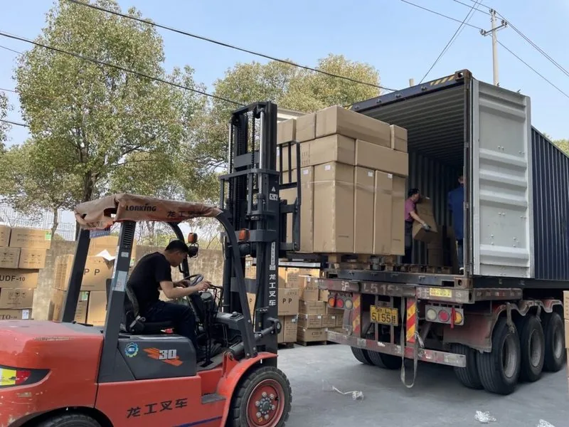

هوزینگ فیلتر
Carbon block filter using activated carbon compressed into a block. Removes chlorine, chloramines, pesticides, and odors. Wholesale factory supply, customizable for OEM/ODM. Selected NSF/ANSI test options...
ارسال استعلام
کارتریج فیلتر Big Blue (30-inch Three Stage Big Blue Water Filter) در دسته هوزینگ فیلتر برای Villa, commercial kitchen, light industrial prefiltration با System Type: Three stage Big Blue filter set; Size: 30 inch housing class; Stages: Sediment, carbon and fine filtration options. Yuchen Water از برچسب خصوصی، لیبل فیلتر، کارتن صادراتی و پیکربندی OEM/ODM بر اساس پروژه پشتیبانی میکند.
| OEM/ODM | کارتریج فیلتر Big Blue |
|---|---|
| PP / CTO / GAC / UF / RO | OEM |
| 10 / 20 / 30 / 40 inch | OEM |
| μm / GPD / LPH | OEM |
| FOB / CIF / DDP | ✓ |
| ISO 9001 / CE / SGS | ✓ |
| MOQ | OEM |
← محصولات
محصولات منتخب میتوانند طبق NSF/ANSI 42، 53 و 58 عرضه یا آزمایش شوند. مدارک ISO 9001، CE، SGS و مرتبط با Halal بنا به درخواست ارائه میشود.
MOQ برای کارتریجهای استاندارد 10" PP، CTO و GAC از 1,000 عدد برای هر SKU برای موارد موجود در انبار، 3,000 عدد برای پوششهای چاپ شده OEM، و 5,000 عدد برای قالبگیریهای کاملاً سفارشی ODM (درپوش انتهایی اختصاصی، O-ring سفارشی، شیرینکورپ با برند) شروع میشود. غشاهای UF و غشاهای RO 75/100/400 GPD معمولاً دارای MOQ 500 عدد هستند. دیسپنسرهای دیواری MOQ 100 واحد. سفارشات آزمایشی کوچکتر برای توزیعکنندگان جدید قابل مذاکره است.
مرکز تولید ما در Yuanhua Town, Haining City, Zhejiang Province، چین واقع شده است — تقریباً 90 دقیقه با ماشین از فرودگاه Shanghai Hongqiao (SHA) و فرودگاه Hangzhou Xiaoshan (HGH) فاصله دارد. این مرکز با مساحت بیش از 20,000 متر مربع دارای خطوط اختصاصی اکستروژن PP melt-blown، پرسهای CTO carbon block سینتر شده، اتاقهای تمیز مونتاژ غشای UF/RO و خطوط مونتاژ SMT دیسپنسر است. ما از بازدیدهای برنامهریزی شده خریداران، بازرسیهای شخص ثالث (SGS، BV، TÜV) و ممیزیهای صلاحیت OEM استقبال میکنیم.
کارتریجهای استاندارد PP، CTO، GAC و T33 در رنگهای موجود در انبار ظرف 7 تا 10 روز ارسال میشوند. کارتریجهای لیبل اختصاصی OEM با چاپ سفارشی: 20 تا 25 روز پس از تایید طرح. المانهای غشای RO/UF: بین 15 تا 20 روز. دیسپنسرهای دیواری و رومیزی: 30 تا 45 روز بسته به میزان سفارشیسازی. بارگیری کانتینر معمولاً 1 × 20'GP (≈ 80,000 کارتریج) یا 1 × 40'HQ (≈ 200 دیسپنسر). شرایط FOB Shanghai یا Ningbo؛ و همچنین ترمهای CIF، CFR و DDP در دسترس هستند.
بله. ما طیف کاملی از غشاهای اسمز معکوس را ارائه میدهیم: 50 GPD، 75 GPD، 100 GPD، 200 GPD، 400 GPD، 600 GPD برای سیستمهای مسکونی زیر سینک، به علاوه المانهای با پسزنی بالا 300 GPD، 400 GPD و 600 GPD برای دیسپنسرهای آب تجاری سبک. المانهای صنعتی 4040 و 8040 (معادل BW30، SW30) برای تصفیهخانههای آب، دیالیز، شستشوی نیمههادیها و کاربردهای دارویی در دسترس هستند. نرخ پسزنی نمک ≥ 96-99٪.
فیلترهای رسوبگیر PP melt-blown از الیاف پلیپروپیلن متصل شده حرارتی برای حذف آلایندههای ذرات (زنگ زدگی، شن، لای) از 0.5 تا 50 microns استفاده میکنند. فیلترهای CTO carbon block سینتر شده (کلر، طعم و بو) از کربن فعال فشرده پوسته نارگیل یا پایه زغال سنگ برای حذف کلر آزاد، کلرامینها، VOCها، آفتکشها و بهبود طعم استفاده میکنند — معمولاً 5 µm یا 10 µm. فیلترهای GAC از دانههای کربن آزاد برای جذب کلر با زمان تماس بالاتر استفاده میکنند و اغلب مرحله دوم در سیستمهای 5 مرحلهای RO هستند. ما هر سه را در مقیاس صنعتی با قابلیت ردیابی کامل تولید میکنیم.

Carbon block filter using activated carbon compressed into a block. Removes chlorine, chloramines, pesticides, and odors. Wholesale factory supply, customizable for OEM/ODM. Selected NSF/ANSI test options...
ارسال استعلام
The 304/316L stainless steel filter housing is built for higher-pressure commercial and industrial water treatment applications where plastic housings may not be preferred. It can be configured for PP...
ارسال استعلام
This built-in pressure tank RO water purifier is designed for distributors and OEM appliance brands that need a compact under-sink system with stable storage pressure and clean cabinet integration. The unit...
ارسال استعلام
High-capacity reverse osmosis membrane for residential and light commercial water purification. Wholesale factory supply, customizable for OEM/ODM. Selected NSF/ANSI test options and ISO/CE/SGS documents...
ارسال استعلام